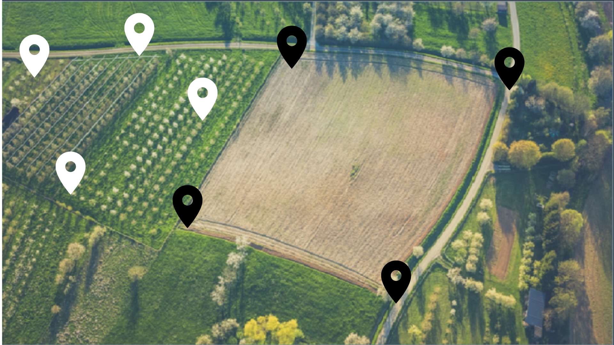

ARTICULO POR FUERA DE LA PAGINA SOBRE UN TEMA ESPECIAL
En este artículo se analiza en profundidad un tema relacionado con la agricultura sostenible.

Cultivos

Insumo

Sensor

Usuarios

Este módulo se encarga de la gestión de los cultivos, proporcionando herramientas para la planificación y el monitoreo.
Este módulo permite gestionar todos los insumos necesarios para las actividades agrícolas.

Este módulo ayuda a controlar los ciclos agrícolas, desde la siembra hasta la cosecha.

Este módulo gestiona los datos de los usuarios, incluyendo roles y permisos.

En este artículo se analiza en profundidad un tema relacionado con la agricultura sostenible.